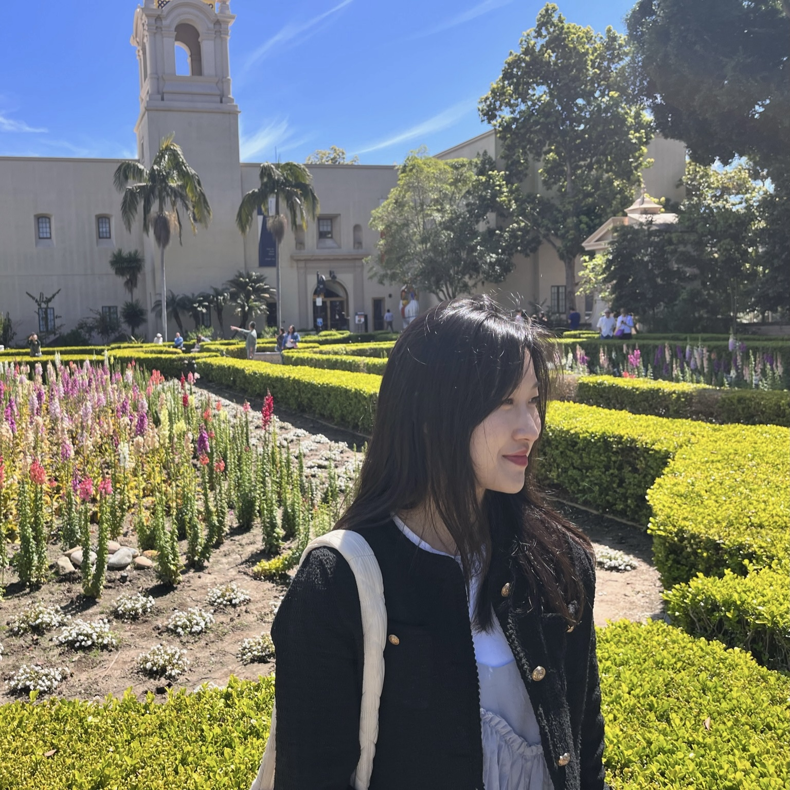

Sieun Choi
M.S./Ph.D. student in Computer & Artificial Intelligence at Dongguk University. sieunchoi@dgu.ac.kr · +82-10-6349-4100 · GitHub · LinkedIn · Lab · CV (PDF) I am currently pursuing an integrated M.S./Ph.D. at Dongguk University (Seoul, Korea). My work spans multimodal learning and practical AI systems, including diffusion-model feedback for sketch generation, clinical decision support with ML ensembles, and RL-based cybersecurity control. |
 |
Education |
Dongguk University, Seoul, Korea — M.S./Ph.D. in Computer & AI Mar 2024 – (M.S. expected Feb 2026) Dongguk University — B.E. in Information & Communication Engineering Mar 2019 – Feb 2024 Purdue University, West Lafayette, IN — Visiting Scholar Oct 2021 – Dec 2021 |
Experience |
Teaching Assistant, Dongguk University Spring 2024, Spring 2025 Teaching Assistant, Dongguk University Fall 2024, Spring 2025 Teaching Assistant, Dongguk University Spring 2024, Fall 2024, Spring 2025 Technology Team Intern, Cipherome, Inc. (San Jose, CA) Mar 2023 – Feb 2024 Undergraduate Researcher, AI Lab, Dongguk University Feb 2022 – Dec 2022 |
Projects |
Diffusion Model Enhancement for Sketch Generation via VQA Feedback
Mar 2024 – ongoing ML-based Common Bile Duct Stone Detection for ERCP Decision Making
Mar 2024 – ongoing Dynamic Access Management of Malicious Packets with Reinforcement Learning
Jan 2025 – ongoing Mobile DLP for Real-Time Personal Information Monitoring
Aug 2022 – Dec 2022 |
Awards |
ICT Challenge 2024 — 1st Place, Ministry of Science and ICT, Korea
Sep 2024 ICT Convergence Services Idea Competition (5G & AI) — 1st Place, KICS, Korea
Feb 2021 |
Publication |
Dedicated Delivery Platform Based on the User Experience of the Visually Impaired
KIPS Conf. Proc., 2022 |
Activities |
IJCAI 2024 Student Volunteer, Jeju, Korea Aug 3 – Aug 9, 2024 Exchange Student Supporter (Vice President), Dongguk Univ. Aug 2019 – Dec 2019 |
Languages |
Korean — Native English — Business fluent · TOEIC 950/990 · OPIc AL · TOEFL ITP 650/677 |
Website template from Jon Barron.